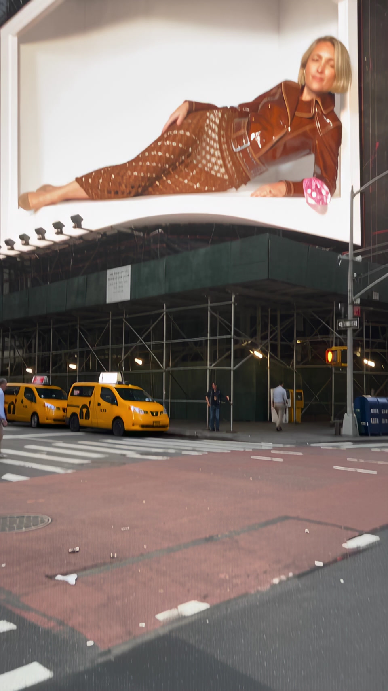
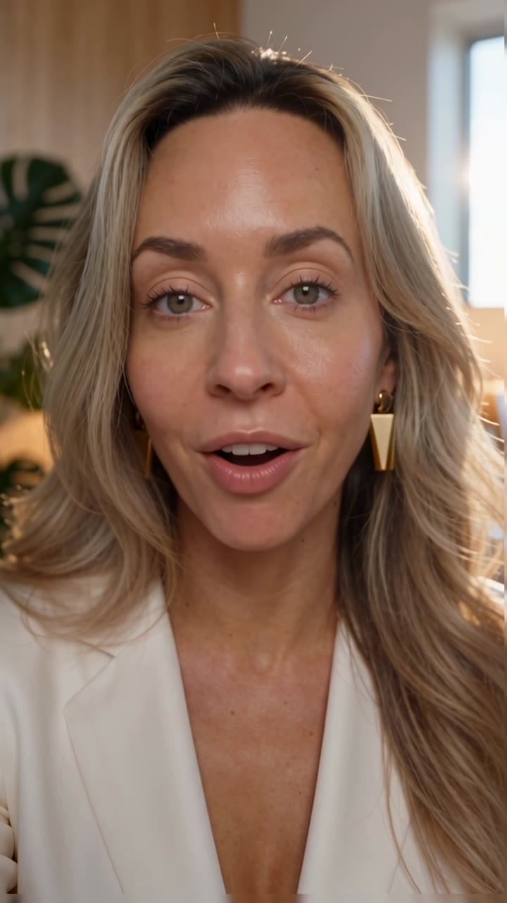
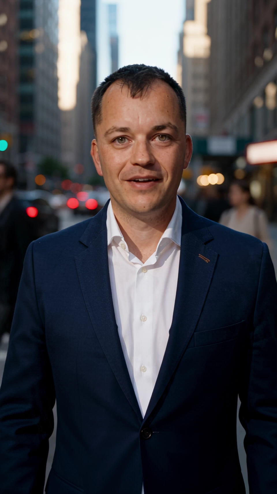
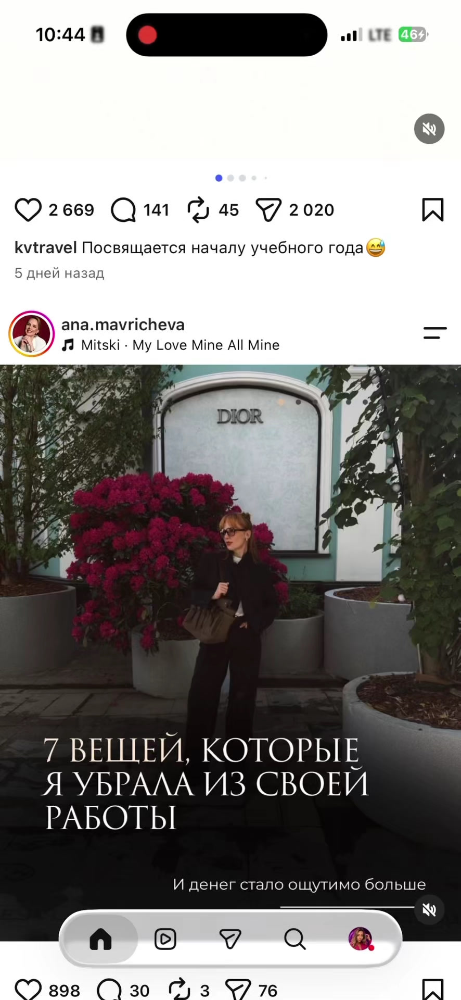
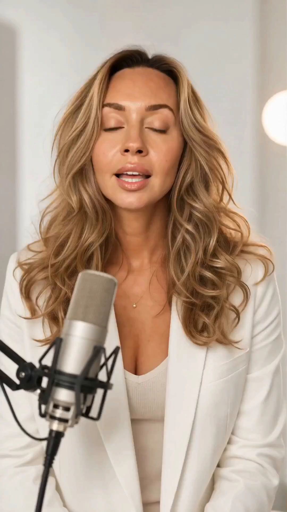

Тренды
Примерьте новый формат на свой контент.
OWAI собирает ваш образ, помогает выбрать темы, создаёт посты, карусели и ролики. А затем публикует готовый контент по расписанию.

Видео не загрузилось
Примерьте новый формат на свой контент.

Ваш персонаж для фотографий и видео.
Разложите историю по карточкам.

Подготовьте текст и изображение для публикации.

Расскажите о своём деле в видео.
Листайте карточки →
OWAI задаёт вопросы о вашей жизни, работе и взглядах. Вы рассказываете, что с вами было, а из разговора появляются истории и темы для блога.
Восемь лет работала бухгалтером, потом ушла в дизайн. Живёт с мужем и сыном. С папой чинит старую мебель. Заказчикам всё сдаёт в срок, а свою прихожую доделывает третий год.
Вы сразу поняли, что хотите заниматься дизайном?
«Я восемь лет была бухгалтером. На курсы дизайна записалась в тридцать. Маме полгода не говорила — она бы спросила, что не так с нормальной работой. Днём отчёты, вечером черчу кухню сестре. Я ещё год так жила: боялась остаться без зарплаты. Уволилась, когда появились два своих заказа».Лена рассказывает
Как я в тридцать лет боялась сказать маме, что меняю работу
Можно рассказать в посте, карусели или ролике.
OWAI помогает вспомнить такие истории, уточняет детали и предлагает, о чём можно рассказать в блоге.
Начать распаковкуОдин раз соберите карту персонажа — и используйте свой образ в разных материалах.
Меняйте окружение, одежду и настроение кадра. Создавайте изображения и видео, которые остаются частью вашего визуального мира.
Как работает аватар ↗ Видео не загрузилось
Видео не загрузилось
Покажите образ, разверните аргумент в карусель или объясните тему голосом. Выберите формат под мысль и площадку.

Видеоформат помогает передать интонацию и внимание к собеседнику.
Экспертные ролики ↗Подготовьте материалы, выберите даты и подключите аккаунты. Создание, очередь и публикация связаны в одном процессе.
Объяснить отличие планирования от автопостинга: пользователь выбирает, что и когда должно выйти.
Характер бренда, темы из жизни команды и контент для разных языковых аудиторий. Помогаем выстроить регулярную работу с социальными сетями.
OWAI для бизнесаПодача и визуальный язык складываются вокруг человека, его темы и аудитории.
Показать, что OWAI помогает разным людям выражать себя, а не повторяет одну и ту же ленту.
От персонажа и темы
до готовой публикации.
Для самостоятельной работы в OWAI Studio. Корпоративный формат обсуждается отдельно.
$14/ мес.
$168 за год
Все возможности месячной подписки. Оплата на год вперёд.
Начать$29/ мес.
Ежемесячная подписка
Создание контента и работа с публикациями в одном месте.
НачатьДля начала достаточно выбрать тему и подготовить фотографии. OWAI помогает собрать текст и визуал; вы проверяете, насколько результат передаёт вашу мысль.
Да. Карта персонажа задаёт основу образа для изображений и видео. На странице аватара показан готовый пример и объяснено, как его использовать дальше.
Расписание отвечает за даты и очередь. Автопостинг — за отправку подготовленного материала в подключённую социальную сеть.
Да. Для корпоративных социальных сетей начинаем с характера бренда, аудитории и порядка работы с материалами. Подробности — в разделе «Для бизнеса».
Подготовьте свои фотографии и одну тему, которую хотите раскрыть. Начните с карты персонажа — затем попробуйте пост, карусель или ролик.
Открыть OWAI Studio